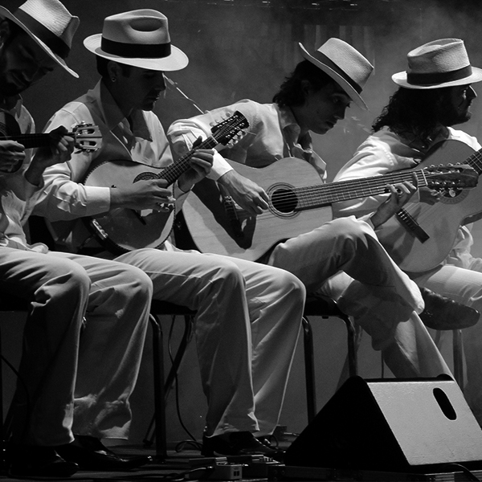

<ion-header [translucent]="true">


  <ion-content class="my-custom-background" [fullscreen]="true">
    <link rel="preconnect" href="https://fonts.googleapis.com">
  <link rel="preconnect" href="https://fonts.gstatic.com" crossorigin>
  <link href="https://fonts.googleapis.com/css2?family=Rock+Salt&display=swap" rel="stylesheet">
    <ion-header collapse="condense">
    </ion-header>
  
    <div class="colored-div">
      <h1 class="musicalia">Musicalia</h1>
      <h3 class="musicalia2">O app do músico!</h3>
       
  </div>

  
  <h3 class="nota" size="">Em 2023, com o auxílio de programadores conhecidos, a ideia de um grupo de amigos pode se concretizar, atendendo o desejo de muitos professores de música locais de testar o conhecimento de seus alunos</h3>

  <ion-card class="nos">
    
    <ion-card-header>
      <ion-card-title>Grupo Musicalia</ion-card-title>
      <ion-card-subtitle>Desde 2003</ion-card-subtitle>
    </ion-card-header>
  
    <ion-card-content>
      O Musicalia foi idealizado por um grupo de músicos de Ourinhos, interior de São Paulo, com o objetivo de fornecer de forma didática e gradativa, uma material para aqueles músicos que querem tanto aprimorar seus conhecimentos diariamente e para os músicos iniciantes, como um material auxiliar.
    </ion-card-content>
  </ion-card>

  <ion-content>

</ion-content>


